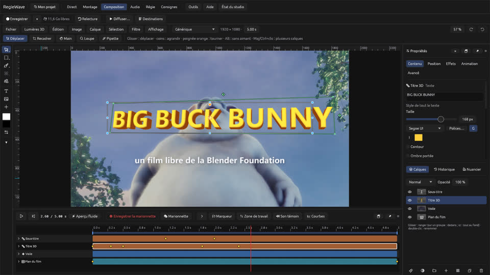

Everything RegieWave does
Four workspaces in one project, a studio-grade mixer, avatars, and compatibility with what you already use.
Direct
Capture, compose your scenes, stream and record, with simple defaults.
- Sources: game, screen and window capture, webcam, videos, images, text, web pages and compositions.
- Several destinations at once: Twitch, YouTube, Kick, SRT, WHIP (very low-latency WebRTC); adaptive bitrate.
- Recording in H.264, HEVC, AV1 or ProRes, with optional separate audio tracks.
- Built-in Twitch alerts, goals, combined Twitch, YouTube and Kick chat with emotes.
- Vertical output for short-form video, and delayed streaming with a panic button.

Studio
With several scenes and a real running order, the Studio workspace takes over.
- Multiview of all scenes, preview and program side by side, Studio mode with a T-bar.
- Per-scene transitions, transition table, video stingers with transparency.
- Run-of-show, lower thirds, teleprompter, soundboard.
- Replay memory: keep the last seconds for a slow-motion replay, without re-encoding.
- Outputs to a screen, a virtual camera or NDI, scene by scene.

Editing
A complete editor, where everything works with the mouse.
- Multi-track timeline, cuts, joins, titles, fades, speed, reverse playback, freeze frames.
- Full colour grading (wheels, curves, LUTs), before / after and versions.
- Subtitles generated on your computer, mixing with automation, 5.1 sound.
- Export H.264, HEVC, AV1, ProRes; AAF, OTIO, EDL, FCP XML exchange.
- Your live recordings open straight in the editor.

Composition
Titles, overlays and animations, like in a compositing app.
- Layers, keyframes, curves, written expressions.
- 3D: extruded titles, lights, drop shadows, camera.
- Motion tracking, one-click or brush object cut-out, warp grid.
- Photo retouching with PSD import and export.
- A composition becomes a live source or an editing clip.

Audio
A per-scene mixer and studio tools, both live and in the editor.
- Mixer with levels, buses, sends, ducking, and sound specific to each scene.
- Voice isolation with a local AI model; hum remover, effects.
- CLAP plugins to go further; podcast export at −16 LUFS.
- 5.1 sound and mixer automation in the editor.
Avatars
An avatar that talks and moves, without motion-capture hardware.
- PNGtuber, 3D (VRM) and Inochi2D avatars, animated by your voice.
- Face tracking from a webcam, or receiving from an iPhone; VMC / Live Link output to other software.
- VTube Studio controlled from RegieWave, and objects thrown across the screen.
- Spout2 input from VTuber software (Windows).

Compatibility
You do not have to start from scratch.
- OBS scene import: positions, sources, filters, with a report of what was carried over.
- obs-websocket: Stream Deck, Streamer.bot, Touch Portal and others control it like OBS.
- Edit exchange with other software: AAF, OTIO, EDL, FCP XML; PSD for images.
- Extensions: audio plugins, custom shaders, scripts, web panels.
Alpha version. RegieWave is still in development: many features have only been tried on a single computer, not yet with every webcam, microphone, graphics card and streaming service. Test before an important live show or recording, keep a copy of your projects and report problems : that is what moves the software forward.
Ready to try it?
Free, no subscription, no watermark. Everything is included in the installer.